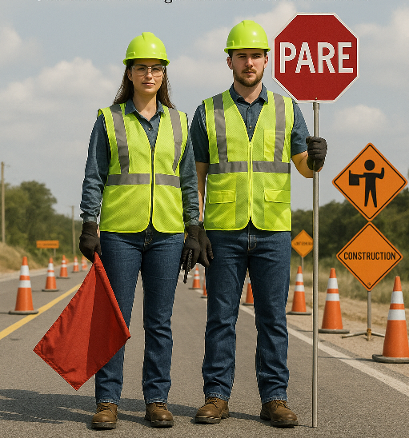

Nivel 1
El primer manual completo para abanderados viales en Puerto Rico. 8 módulos, 39 secciones, alineado con la 11.ª edición del MUTCD. Incluye acceso a Leo, tu experto de seguridad vial con IA disponible 24/7. The first complete training manual for roadway flaggers in Puerto Rico. 8 modules, 39 sections, aligned with the 11th edition of the MUTCD. Includes access to Leo, your AI-powered safety expert available 24/7.